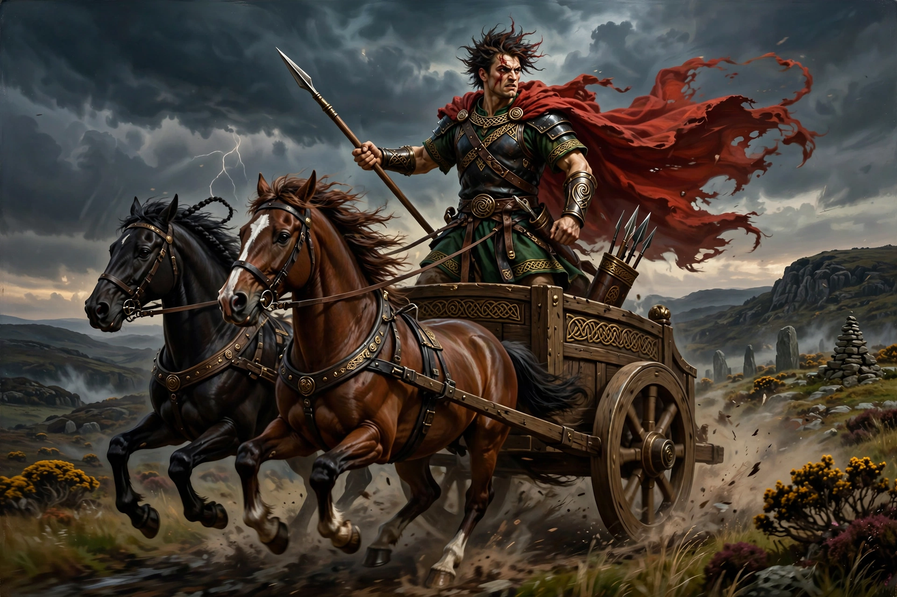

Irish mythology
Irish mythology is the body of myths native to Ireland, preserved through oral tradition and recorded from the early medieval period in manuscripts written largely by Christian monks. It forms part of the wider Celtic mythology and is conventionally organised into four great cycles of tales, together with the dindsenchas (lore of places) and other genres.

| Cycles | Mythological, Ulster, Fenian, Kings |
|---|---|
| Key texts | Lebor Gabála Érenn, Táin Bó Cúailnge, Acallam na Senórach |
| Major figures | Lugh, the Dagda, the Morrígan, Cú Chulainn, Fionn mac Cumhaill |
| Language | Old and Middle Irish |
The four cycles
Mythological Cycle
The Mythological Cycle tells of the successive invasions of Ireland, culminating in the Tuatha Dé Danann — the gods and god-like people who defeat the monstrous Fomorians at the Second Battle of Mag Tuired, where Lugh slays Balor. These tales are preserved above all in the Lebor Gabála Érenn ("Book of the Taking of Ireland").
Ulster Cycle
The Ulster Cycle is set around the reign of King Conchobar mac Nessa at Emain Macha and the wars with Connacht. Its central tale is the Táin Bó Cúailnge ("Cattle Raid of Cooley"), in which the youthful hero Cú Chulainn single-handedly defends Ulster against Queen Medb's army.
Fenian Cycle
The Fenian (or Ossianic) Cycle centres on Fionn mac Cumhaill and his warrior band the Fianna, and includes the pursuit of Diarmuid and Gráinne and the vast dialogue-frame tale Acallam na Senórach, in which the last Fianna recount the old days to Saint Patrick.
Cycles of the Kings
The Cycles of the Kings mix history and legend in tales of early Irish kings, from Labraid Loingsech to Brian Bóruma, blending dynastic propaganda with mythic motifs such as the sovereignty goddess who legitimises the rightful king.
Gods and the Otherworld
Irish myth is populated by the Tuatha Dé Danann — the Dagda, Lugh, Brigid, the Morrígan, Manannán mac Lir — who after their defeat withdraw into the hollow hills, becoming the Aos Sí of the Otherworld. The tales reflect an older pagan religion filtered through medieval Christian redactors, and interest in them surged during the Celtic Revival.
See also
References
- Cross, Tom Peete; Slover, Clark Harris, Ancient Irish Tales, 1936.
- MacCulloch, John Arnott, Celtic Mythology, 1918.
- Rees, Alwyn; Rees, Brinley, Celtic Heritage, Thames & Hudson, 1961.